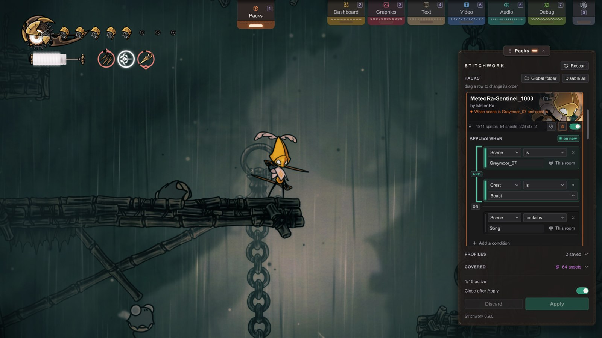
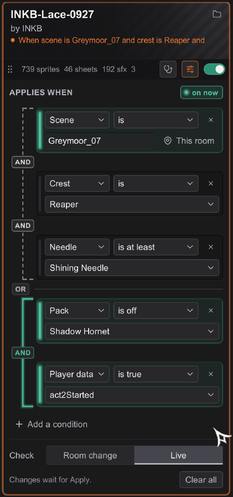
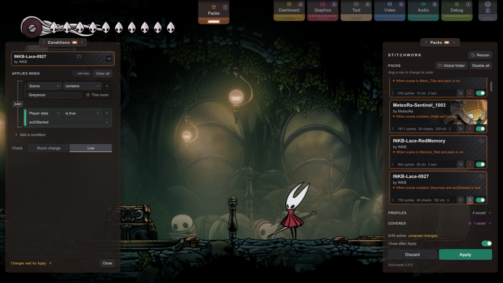
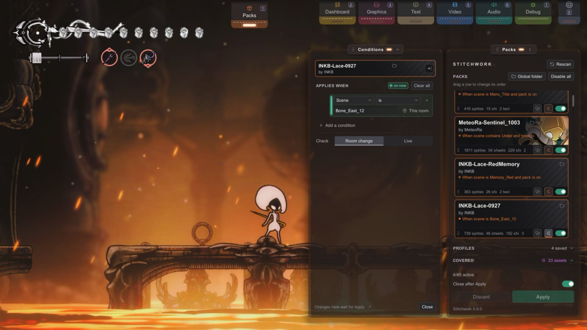
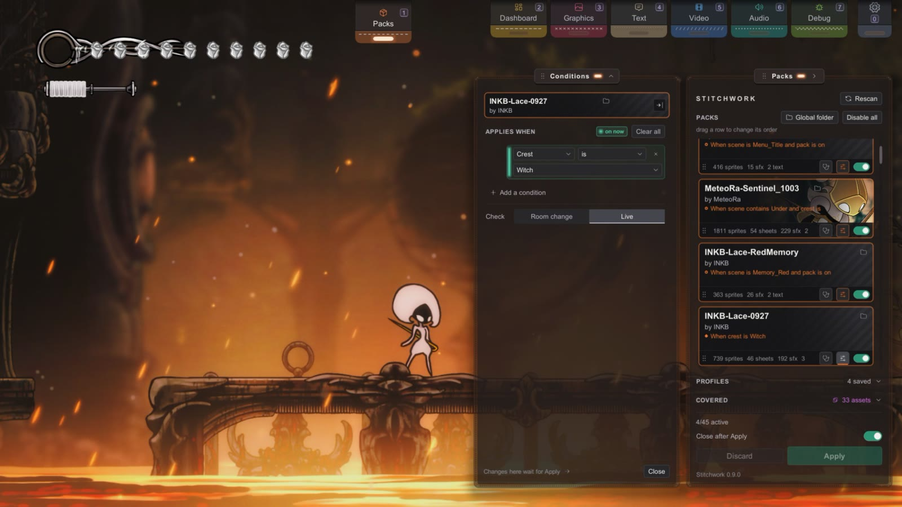
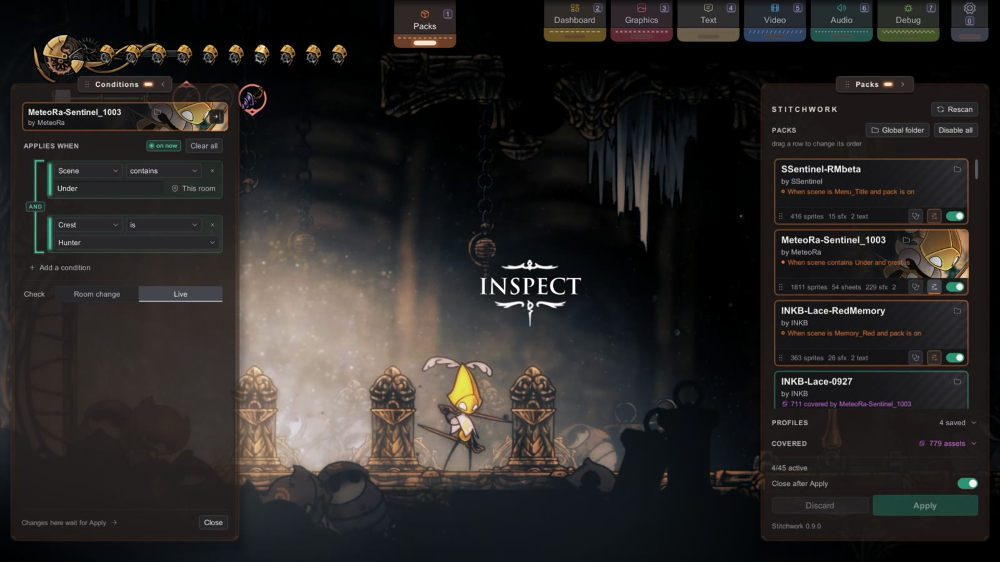

AEx1 Conditional Activation
Foundations · extra.
Make a pack turn itself on and off with the game.
It can follow the room, the crest you wear, or an event you have passed.
A pack with no conditions is on whenever you enable it, which suits most packs.
You'll be able to: give a pack a set of conditions, read the brackets and the lamps of the conditions drawer, pick the right re-check timing, and debug a pack that won't fire when you think it should.
What conditions are for
Conditions limit a pack to the times when game state agrees. Three shapes they are good at:
- A mood pack that only dresses up one region — custom Greymoor music that goes quiet the moment you leave.
- A crest-tied visual swap — a Witch-crest skin that appears only while that crest is equipped, and steps aside otherwise.
- A post-milestone victory lap — a skin that switches on once you beat a particular boss, or once a game flag has flipped.
None of this needs code. You build it in the Pack Manager's conditions drawer, one condition at a time. To open the drawer, click the sliders button in the bar at the bottom of the pack's card. The drawer opens under the card. The same button closes it. The drawer has no Done button.
An enabled pack with conditions gets an orange border. The card's status line shows the conditions as a sentence, for example "When crest is Reaper and needle is at least Shining Needle". The sentence gives the first group; "· or 1 more" counts the other groups. A dot before the sentence fills while the conditions hold.
The conditions in the drawer belong to your install, not to the pack: Stitchwork keeps them in its own settings. A pack can carry conditions only as rule sets, a preview described at the end of this page. Creators who want the whole pack to switch on by conditions say so in the pack's README; each player sets them once.
How the logic reads — brackets, not booleans
Each pack has a list of conditions in your install, and the drawer groups them so you can think in pictures instead of logic:
- Conditions inside the same bracket must all be true together (an AND).
- Separate brackets are alternatives — any one satisfied is enough (an OR).
That's the whole rule. ("Scene contains Greymoor and crest is Witch" OR "scene is Bone_East_12" — two brackets; satisfy either.) The formal name for this shape is disjunctive normal form, which you can forget immediately.
Controls
- Add a condition adds a condition at the bottom. The new condition joins the last group with AND.
- The AND / OR button between two conditions shows how they join. Click the button to change it.
- × at the end of a condition removes that condition.
- Clear all, at the foot of the drawer, removes every condition. Click it two times.
Reading the brackets
- AND joins first. All the conditions between two OR buttons make one group, and one bracket holds them.
- An AND button sits on its group's bracket. An OR button sits at the left, with a line across the drawer.
- A group of one condition has no bracket.

One condition, in words
Each condition is a box with a lamp at its left edge. It reads as words, on two lines:
- Line 1: the subject, the operator, and ×.
- Line 2: the value.
Click the subject or the operator to open its list under the button. The subject list has four groups: PLACE (Scene, Area), STORY (Act, Boss defeated), HORNET (Crest, Needle, Ability, Masks, Silk spool, Silk Hearts, Steel Soul, Player data) and STITCHWORK (Pack). A short hint at the right of each subject says what it reads.
| Subject | Operators | Value |
|---|---|---|
| Scene | is, is not, contains, does not contain | a scene name that you type, case ignored. This room fills in the room you are in now. |
| Area | is, is not | pick a map area from the list. The list has a search. A cutscene keeps the area of the room before it. |
| Act | is, is not, is below, is at most, is above, is at least | Act 1, Act 2 or Act 3. |
| Boss defeated | include, do not include | pick bosses from the list. The list has a search. A boss that this save has beaten shows "defeated". |
| Crest | is, is not | pick from the list: Hunter, Reaper, Wanderer, Shaman, Architect, Beast, Witch, Cursed or Cloakless. The crest you wear shows "equipped". |
| Needle | is, is not, is at least, is at most | pick from the list: Needle, Sharpened Needle, Shining Needle, Hivesteel Needle or Pale Steel Needle. Your needle's level shows "now". |
| Ability | include, do not include | pick skills and cloaks from the list. The list has a search. An ability that Hornet has shows "learned". |
| Masks | is, is not, is below, is at most, is above, is at least | a number: her masks when she is fully healed. |
| Silk spool | the same as Masks | a number: the size of her silk spool. |
| Silk Hearts | the same as Masks | a number: the Silk Hearts that she has. |
| Steel Soul | is on, is off | no value: whether the save is a Steel Soul save. |
| Player data | depends on the field (see below) | pick a field of the game's save data (PlayerData) from the list. The list has a search. |
| Pack | is on, is off | pick another pack from the list. Each pack in the list shows "on" or "off". Use it for an addon pack that applies only with its parent pack. |
is with a scene name must match the full name. contains matches a part of the name, so it still matches when the game adds a suffix to a scene name.
Boss, ability and area names show in the interface language when the game has that text. A condition that this version of Stitchwork cannot read, for example a boss from a newer version, counts as false. Its row says so.
is not, does not contain, do not include and is off turn one condition around — "active everywhere except here." They change the single condition, not the whole bracket.

What the drawer shows while you play
The drawer reads the game two times a second. It reads the conditions as the drawer shows them, so you see the result of an edit before you click Apply.
- A condition that holds lights its lamp, and its box turns teal.
- When every condition of a group holds, the group's bracket becomes a solid teal thread.
- The chip at the top of the drawer, beside APPLIES WHEN, reads on now or not now.
- When the game makes a condition true (a crest change at a bench, for example), the condition flashes. Then the thread fills the bracket, and the chip pops.

Reduced motion (Settings › General) turns these effects off.
Point at a part of the drawer to see the reason:
- A lamp says "Holds right now", or what the game reads now, for example "Does not hold: now crest is Reaper".
- A bracket says how many of its conditions hold, for example "1 of 2 hold: all must".
- The chip names the group that turns the pack on. When no group holds, it names the group that is closest, and how many of its conditions hold.
More room: detach the drawer
The drawer can move into its own panel beside the Packs panel. To move it, click the arrow button in the head of the drawer (Detach). From then on, the sliders button on any card opens that pack's conditions in the panel. Stitchwork keeps this choice for every pack, also after a restart.
The panel shows one pack at a time: the pack whose sliders button you clicked. Its top strip shows the pack's cover, name and state, and a pack off chip when the pack is off. The controls are the drawer's, with more room. When a pack has rule sets and the screen is wide enough, the sets get a column of their own.
Your edits wait for Apply at the foot of the Packs panel, as in the drawer. The line at the foot of the panel says so, and it turns amber while this pack has changes to apply. Point at the line, and the Apply button lights up.
To go back to the drawer, click the arrow at the right end of the panel's top strip (Reattach). Close at the foot closes the panel and keeps your changes. You can drag the panel anywhere; each time it opens, it starts beside the Packs panel again.
When the pack re-checks — Check
Conditions only matter at the moments they're evaluated. The Check row near the foot of the drawer picks one of two choices:
- Room change — Stitchwork checks the conditions each time a new room loads. This is cheap, and correct when your conditions are about where you are (Scene, Area) or about other packs (Pack).
- Live — Stitchwork checks the conditions every 2 seconds during play. Use it when a condition can change without a room load: a crest swap, a needle upgrade, a boss that you beat, a flag that changes in the room.
The choice changes when the check runs, never its outcome. A scene-only condition works fine on Live — it just checks a little more often than it needs to.
The drawer helps with this. When you pick a subject that can change inside a room, it sets the pack to Live for you. These subjects are Act, Boss defeated, Crest, Needle, Ability, Masks, Silk spool, Silk Hearts and Player data. If you set the pack back to Room change, the drawer shows a warning: "Story and Hornet conditions can change inside a room; Live catches that."
This page is definitely not brought to you by 40-cycle toil in the Underworks.
Next: PlayerData, the master key.
PlayerData — the master key
A Player data condition reads a field on the game's live save data (PlayerData), by name. That makes it the most general condition (geo, pickups, milestones, region flags — if the game tracks it, this can test it) and the one that needs the most care, because the field names belong to the game, not to Stitchwork.
The field list shows each field that is true or false, a number, or text, with its type. Type a part of a name in the search to make the list shorter. The operators depend on the type:
- A true or false field takes is true or is false — good for "has it happened yet" flags.
- A number field takes is, is not, is below, is at most, is above or is at least, then a number that you type:
geois at least100. - A text field takes is or is not, then text that you type.
- Don't trust a field name you didn't verify. PlayerData field names shift between game versions, and names carried over from Hollow Knight 1 are a trap — in Silksong you are Hornet, so an HK1-style
defeatedHornetis not your "beat this boss" flag. The field list shows the names, but not what each name means. To find the right one, open the Text tab's Editor panel and its FLAGS strip. It lists the PlayerData flags that change while you play, by their real names. Turn off Story only there to see all of them. Use a name from that list, not one from memory or from a guide written for another version. - A bad field name reads as "false," silently. The drawer's list prevents typos, but a name in a hand-edited settings file, or a name that a game update removed, still fails. It won't error — the pack just never fires, which looks identical to a logic bug. So verify the name before you blame the logic.
Worked examples
Each is one or two conditions in the drawer.
Only in one room — a recolor for one room of Bone East:
SceneisBone_East_12(stand in the room and click This room to fill in the name)- Check: Room change.

Only with the Witch crest — responds within about 2 seconds after you swap crests:
CrestisWitch(picked from the list)- Check: Live.

Anywhere in the Underworks, but only with the Hunter crest — two conditions, same bracket:
ScenecontainsUnder(the Underworks rooms are namedUnder_01,Under_02and so on)- AND (a new condition joins with AND, so you click nothing here)
CrestisHunter- Check: Live.

In Greymoor, OR once a milestone flag is set — two conditions, different brackets:
- Group 1:
ScenecontainsGreymoor - OR (the second condition joins with AND; click that AND once to make it OR)
- Group 2:
Player dataact2Startedis true - Check: Live.
When a pack won't fire
Work down the table from the top. The first rows check the outside: the switch and Apply. The last rows check the logic.
| Symptom | Check |
|---|---|
| The pack never turns on | Look at the switch on the pack's card. A disabled card looks dim. A disabled pack with conditions never checks its conditions. |
| Your edits change nothing | Click Apply. The foot of the drawer says so: "Changes wait for Apply." The drawer does not apply the changes when you close it. |
| You do not know which condition fails | Open the drawer and read the lamps. A dark lamp marks a condition that does not hold. Point at the lamp: the text says what the game reads now. |
| A Scene condition never holds | Use the scene's real name. The status badge (bottom left) shows the current scene name on its second line. You can't copy it from there, so spell it exactly as shown, especially for an exact is match. Or stand in the room and click This room. |
| A Scene is condition fails in some rooms | is fails when the scene name carries a suffix that you didn't include. When in doubt, use contains. |
| A new condition never matches, or matches every scene | Fill in the value. A new condition starts as Scene is with no value, and it never matches. An empty contains matches every scene. Fill in every condition, or remove it with ×. The card's sentence shows … for an empty value. |
| The pack changes only at the next room | Set Check to Live: see When the pack re-checks. |
| A crest in a hand-edited settings file does not match | In the drawer you pick crests from the list, so you can't mistype one. In Stitchwork's settings files, a crest value can be the in-game name or the game's ID. Three IDs differ from the in-game names: Shaman is Spell, Architect is Toolmaster, Beast is Warrior. |
| You want to see when the pack switches | Read the log. Each time a conditional pack turns on or off, BepInEx/LogOutput.log gets a line such as [PackManager] 'My Pack' condition → active (scene='Bone_East_12'). The line also gives the scene's real name. |
| A Player data condition never holds, and nothing errors | Suspect the field name first: see the cautions in PlayerData — the master key. |
| The cause is still unknown | Strip the pack back to no conditions (always on), and confirm that the content itself works. Then add the conditions back one at a time. The condition that turns the pack off is the cause. |
Test each pack both ways. Load the save, walk into the target scene (or set up the target state), and confirm that the pack fires. Then confirm that it stays off where it shouldn't fire. The lamps and the chip show what holds at each place.
Rule sets: conditions a pack carries (preview)
Note
Rule sets are a preview. The folder layout and the file format can still change.
Everything above lives in your install. A rule set lives in the pack: a part of the pack that shows only while its condition holds. A Reaper version of a cloak, or a torn look at one mask of health, can ship inside the pack, and every player gets it with no setup.
Put each part in Sets/<name>/ in the pack, laid out like a pack (Sprites/, Spritesheets/, Sounds/, Text/ and the other folders):
MyPack/Stitchwork/
Sprites/… ← the pack's own files
Sets/Reaper/Sprites/… ← only while Hornet wears the Reaper crest
Sets/LowHealth/Sprites/… ← only at one mask of healthA folder with a built-in name works with no other file. The names are the nine crests (Hunter, Reaper, Wanderer, Shaman, Architect, Beast, Witch, Cursed, Cloakless), LowHealth (one mask left), FullHealth, TitleScreen and Always.
For your own names, or to set the order, add a conditions.json beside pack.json:
{
"conditions": { "Hurt": { "playerData": "health <= 2" } },
"sets": [
{ "name": "Reaper", "when": "Reaper" },
{ "name": "Hurt", "when": "Hurt" }
]
}- When two sets are on, the higher one in the list wins, as the higher pack does in the pack list. A set that
"sets"names beats a folder set that it does not name. Where no set has a file, the pack's own file shows. - A set that turns on or off reloads the pack's art, as a pack with conditions does. Every file of the set loads again, so keep a set to the files that change. The log gets one
[RuleSets]line each time. - The Pack Doctor checks
conditions.jsonand theSets/folders. It warns about a set that holds most of its pack, and about a set file that is the same as the pack's own file. - A code mod can publish a condition for a set. See The API for Code Mods.
In the Pack Manager, the pack's conditions drawer has a SETS section. Each set's row shows its files, for example "22 sprites · 2 sounds", and the card's line says "n of m sets on".
- Try, the eye on a set's row, shows the set now, whatever its condition, until you close the drawer. It works once the pack is on and applied.
- An amber "n shared" chip on a set's row: that many of its files are also in a higher set, and the two can be on together. Point at the chip to see which set wins.
- A set whose condition can never be true says so on its row. It stays off.
- Under Your conditions, a player can add conditions of their own to a set.
- For a pack in the global Packs folder, the pencil opens
conditions.jsonin an editor in the drawer. Its arrows move a set up or down in the list. Save writes the file.
Next
- The rest of the Pack Manager → Pack Manager
- Everything else → Troubleshooting